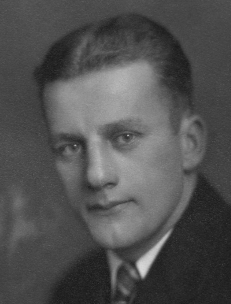

Edith Bernice Carlson.

Född 21 dec 1909 i Decorah, Winneshiek County, Iowa, USA 3 .
Död 14 jul 1986 i Rochester, Olmsted County, Minnesota, USA 4 .
|
Född
28 nov 1904
i Minnesota, USA
1
.
Död 27 aug 1980 i Decorah, Winneshiek County, Iowa, USA 1 . |
 |
|
Richard Vernon Lybeck
Född 28 nov 1904 i Minnesota, USA 1 . Död 27 aug 1980 i Decorah, Winneshiek County, Iowa, USA 1 . |
|||
|
Gift
12 aug 1933
i Decorah, Winneshiek County, Iowa, USA
2
.
Edith Bernice Carlson.
Född 21 dec 1909 i Decorah, Winneshiek County, Iowa, USA 3 . Död 14 jul 1986 i Rochester, Olmsted County, Minnesota, USA 4 . |
Framställd 6 nov 2026 med hjälp av Disgen version 2025.